atlc. Each example can be found in the examples directory.
| Cross section | Properties | E-field | Ex field | Ey-field | Voltage | Energy | Permittivity |
| 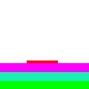 | multi-dielectric.bmp: C= 93.7871 pF/m L= 279.3847 nH/m Zo= 54.5795 Ohms |
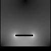 | 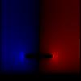 | 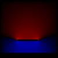 | 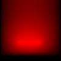 | 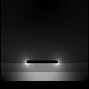 | |
| 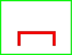 | ushape.bmp: C= 76.4283 L= 145.5809 nH/m Zo= 43.6441 Ohms |
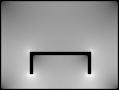 | 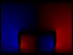 | 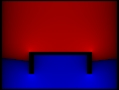 | 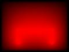 | 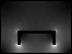 | 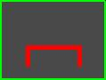 |
| 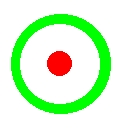 | coax2.bmp: C= 47.6374 pF/m L= 233.5667 nH/m Zo= 70.0215 Ohms |
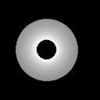 | 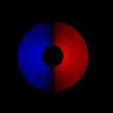 | 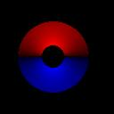 | 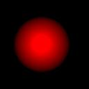 | 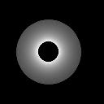 | 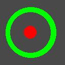 |
| very-odd.bmp: C=59.1756 pF/m L= 188.0251 nH/m Zo= 56.3685 Ohms |
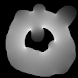 | 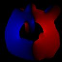 | 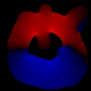 | 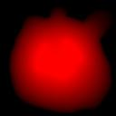 | 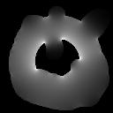 | ||
| 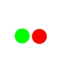 | twin-wire.bmp: C= 63.2867 pF/m L= 175.8111 nH/m Zo= 52.7068 Ohms |
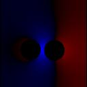 | 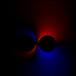 | 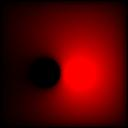 | 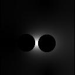 |
| 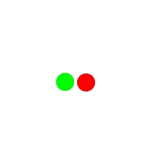 | 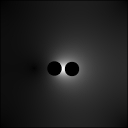 | twin-wire2.bmp:With the bitmap drawn on a larger (256x256) image like this, the error introduced by truncating the fields to zero at the edges of the image are smaller. For this simulation, atlc reportsC= 57.1575 pF/m L= 194.6639 nH/m Zo= 58.3588 Ohms The results are clearly very different from what the first simulation showed. |
| 128x128 (twin-wire.bmp) | Zo= 52.7068 Ohms | run time = 1 s. |
| 256x256 (twin-wire2.bmp) | Zo= 58.3588 Ohms | run time = 8 s |
| 512x512 (twin-wire3.bmp) | Zo= 60.7080 Ohms | run time = 82 s. |
| 1024x1024 (twin-wire4.bmp) | Zo= 61.9047 Ohms | run time = 834 s. | 2048x2048 (twin-wire5.bmp) | Zo= 62.3786 Ohms | run time = 4300 s. |
The problem with the fields being truncated does not exist with fully enclosed transmission lines. As is shown in the accuracy section, the results are very acurate on other such lines in a very short time.
atlc is written and supported by Dr. David Kirkby (G8WRB) It it issued under the GNU General Public Licence